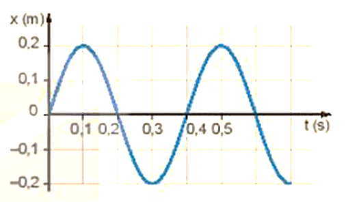
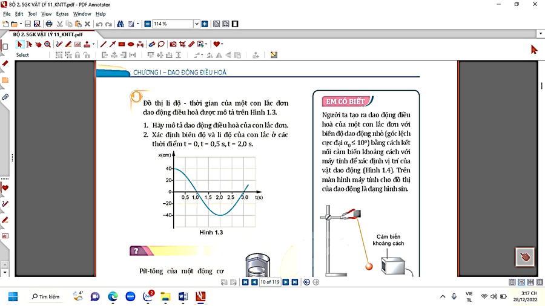
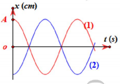
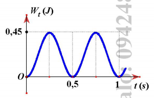
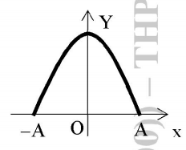
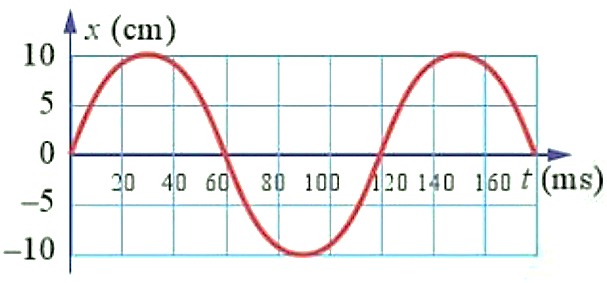
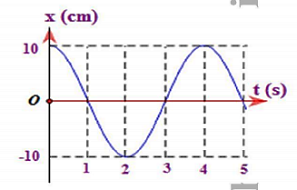

📋 Quy định làm bài
- Thời gian: 65 phút. Còn 10 phút hệ thống nhắc; hết giờ có thêm 5 phút gia hạn rồi tự động nộp.
- Bài làm ở chế độ toàn màn hình. Chuyển tab, mất focus, thoát toàn màn hình đều bị ghi nhận và báo cho giáo viên.
- Không dùng chuột phải, sao chép/dán, phím tắt. Trợ lý AI chỉ mở sau khi nộp bài. Phần tự luận: AI gợi ý điểm, giáo viên duyệt điểm chính thức.
PHẦN I. Câu trắc nghiệm nhiều phương án lựa chọn
Mỗi câu có 4 phương án, chỉ chọn một đáp án đúng (0,25 điểm).
1
Trong dao động điều hoà, đại lượng nào sau đây không có giá trị âm?
2
Chu kì dao động là:
3
Một chất điểm dao động điều hoà có tần số góc $\omega=10\pi$ (rad/s). Tần số của dao động là
4
Trong dao động điều hoà, giá trị cực đại của vận tốc là
5
Một vật dao động điều hòa dọc theo trục Ox, biết vận tốc của vật khi qua vị trí cân bằng là $v_{max}$ và gia tốc cực đại của vật là $a_{max}$. Biên độ dao động và tần số góc của vật lần lượt là:
6
Cơ năng của một vật dao động điều hòa
7
Công thức tính tần số dao động của con lắc lò xo là
8
Một con lắc đơn được thả không vận tốc ban đầu từ biên độ góc $\alpha_0$. Cơ năng của con lắc là:
9
Hiện tượng cộng hưởng xảy ra khi
10
Chọn một phát biểu sai khi nói về dao động tắt dần?
11
Trong những dao động tắt dần sau, trường hợp nào tắt dần nhanh có lợi?
12
Hình vẽ là dao động điều hòa của một vật. Hãy xác định tốc độ cực đại của vật dao động:

13
Đồ thị li độ - thời gian của một con lắc đơn dao động điều hòa được mô tả trên hình vẽ. Biên độ dao động của con lắc đơn là:

14
Một vật dao động điều hòa có phương trình $x=4\cos(10\pi t+\pi/3)$ cm. Tại thời điểm t = 0 vật có tọa độ bằng bao nhiêu?
15
Một vật dao động điều hoà theo phương trình $x=-4\sin(5\pi t-\pi/3)$ cm. Biên độ dao động và pha ban đầu của vật là
16
Chất điểm dao động điều hoà với phương trình $x=6\cos(10t-3\pi/2)$ cm. Li độ của chất điểm khi pha dao động bằng $2\pi/3$ là
17
Đồ thị biểu diễn hai dao động điều hòa cùng phương, cùng tần số, cùng biên độ A và ngược pha nhau như hình vẽ. Điều nào sau đây là đúng khi nói về hai dao động này?

18
Một vật dao động điều hòa với biên độ 4 cm. Khoảng thời gian giữa hai lần liên tiếp tốc độ của vật cực đại là 0,05 s. Khoảng thời gian ngắn nhất để nó đi từ vị trí có li độ +2 cm đến li độ +4 cm là
19
Một vật dao động điều hòa với phương trình $x=5\cos\omega t$ (cm). Quãng đường vật đi được trong một chu kì là
20
Một vật dao động điều hòa với biên độ 4 cm và chu kì 2 s. Quãng đường vật đi được trong 4 s là
21
Một vật có khối lượng 1 kg dao động điều hòa xung quanh vị trí cân bằng. Đồ thị dao động của thế năng của vật như hình vẽ. Cho $\pi^{2}=10$ thì biên độ dao động của vật là

22
Một vật dao động điều hòa dọc theo trục tọa độ nằm ngang Ox với chu kì T, vị trí cân bằng và mốc thế năng ở gốc tọa độ. Tính từ lúc vật có li độ dương lớn nhất, thời điểm đầu tiên mà động năng và thế năng của vật bằng nhau là
23
Một vật có khối lượng 1 kg dao động điều hòa xung quanh vị trí cân bằng. Đồ thị dao động của thế năng của vật như hình vẽ. Cơ năng của vật dao động là
24
Cho một vật dao động điều hòa với biên độ A dọc theo trục Ox và quanh gốc tọa độ O. Một đại lượng Y nào đó của vật phụ thuộc vào li độ x của vật theo đồ thị có dạng một phần của đường parabol như hình vẽ bên. Y là đại lượng nào trong số các đại lượng sau?

25
Hình vẽ là dao động điều hòa của một vật. Hãy xác định gia tốc cực đại của vật dao động:

26
Dao động của một vật là dao động cưỡng bức dưới tác dụng của ngoại lực $f=F_{0}\cos(20\pi t)$, $F_0$ không đổi. Chu kì dao động của vật là
PHẦN IV. Tự luận
Viết lời giải đầy đủ. Bấm “Nộp để AI gợi ý điểm”: AI chấm gợi ý theo biểu điểm, giáo viên sẽ duyệt điểm chính thức.
1
Bài 1 (1,5 điểm). Cho vật dao động điều hoà có đồ thị li độ - thời gian như hình vẽ.
a. Xác định biên độ, chu kì, tần số và tần số góc của vật dao động.
b. Viết phương trình dao động điều hoà của vật.
c. Tìm vận tốc và gia tốc của vật tại thời điểm 3,5 s.

a. Xác định biên độ, chu kì, tần số và tần số góc của vật dao động.
b. Viết phương trình dao động điều hoà của vật.
c. Tìm vận tốc và gia tốc của vật tại thời điểm 3,5 s.
2
Bài 2 (1,5 điểm). Đồ thị hình vẽ mô tả sự thay đổi thế năng theo li độ của quả cầu có khối lượng 0,4 kg trong một con lắc lò xo treo thẳng đứng. Xác định:

a. Cơ năng của con lắc lò xo.
b. Vận tốc cực đại của quả cầu.
c. Thế năng của con lắc lò xo khi quả cầu ở vị trí có tốc độ 20 cm/s.
a. Cơ năng của con lắc lò xo.
b. Vận tốc cực đại của quả cầu.
c. Thế năng của con lắc lò xo khi quả cầu ở vị trí có tốc độ 20 cm/s.